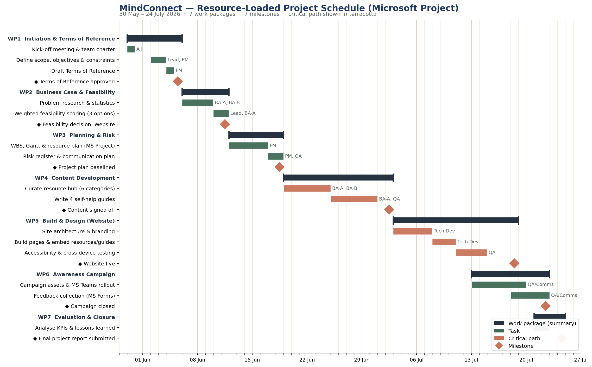

A calmer place to find the right help, sooner.
MindConnect brings campus and national mental-health support into one trusted place — so when things feel heavy, finding help takes a moment, not an afternoon.
Six places to start
Whatever’s on your mind, pick the topic closest to it. Every link is checked and points to a trusted NHS, charity or campus service.
Anxiety & stress
Grounding techniques, breathing tools, and when to seek more help.
Open →Low mood & depression
Understanding low mood, small daily steps, and routes to support.
Open →Sleep
Sleep hygiene, screen habits, and free CBT-for-insomnia tools.
Open →Academic pressure
Deadlines, perfectionism, and how to reach UWS academic support.
Open →Money worries
Hardship funds, budgeting help, and the UWS finance team.
Open →Urgent & crisis help
What to do right now if you or a friend are not safe.
Open →🌿 Anxiety & stress
Anxiety is common and treatable. These tools help in the moment and over time.
- NHS — Every Mind Matters: free anxiety & stress tools nhs.uk
- Anxiety UK — helpline & self-help anxietyuk.org.uk
- Try the 5-4-3-2-1 grounding technique in the self-help guides.
- UWS Wellbeing Service — book a 1:1 wellbeing appointment.
🌤️ Low mood & depression
- NHS — depression self-assessment & talking-therapies self-referral nhs.uk
- Mind — understanding depression mind.org.uk
- Student Space by Student Minds — text, web chat & phone support studentspace.org.uk
🌙 Sleep
- NHS — how to fall asleep faster & sleep better nhs.uk
- Sleepstation / Sleepio — CBT for insomnia, subject to NHS access.
- See Guide 3 for a simple wind-down routine.
📚 Academic pressure
- UWS Effective Learning Service — study skills & time management.
- Talk to your Personal Tutor early — extensions and ECS are there to help.
- See Guide 4 on managing deadlines without burning out.
💷 Money worries
- UWS Funded Student Support / Hardship Fund — ask the finance team.
- Blackbullion — free student budgeting tools blackbullion.com
- Citizens Advice — free, confidential money & debt advice.
🆘 Urgent & crisis help
- Emergency — if life is at risk, call 999.
- Samaritans — 24/7, free: call 116 123 or email jo@samaritans.org.
- Shout — 24/7 text support: text SHOUT to 85258.
- NHS 111 — select the mental health option for urgent help.
Four short guides you can keep
Each is two pages or less, written in plain English. Download, print, or read on your phone.
Calm in five minutes
Box breathing and the 5-4-3-2-1 grounding technique for moments of panic.
Anxiety · Drive folderSmall steps for low days
Behavioural-activation basics: tiny actions that lift mood when motivation is gone.
Low mood · Drive folderA better night’s sleep
A simple wind-down routine and screen-curfew habit that actually sticks.
Sleep · Drive folderDeadlines without dread
Breaking work into chunks, beating perfectionism, and asking for help in time.
Academic · Drive folderYou don’t have to figure it out alone
If you’d rather talk to a person, here’s where to start. All of these are free and confidential.
UWS Wellbeing Service
Free, confidential 1:1 support for students on campus.
Book via the student portalSamaritans
Whatever you’re going through, 24 hours a day.
116 123Shout
24/7 text support if you’d rather not speak.
Text SHOUT to 85258Built by students, for students
MindConnect is a voluntary project by six MSc Project Management students at UWS London Campus, created for the Student Wellbeing Service. We don’t replace professional help — we make it easier to find.
Find your topic
Six categories cover the most common things students face.
Get trusted links
Every resource is verified and points to an official service.
Take a small step
A guide, a phone number, or a booking — whatever fits today.
Tell us how it went
Your feedback shapes what we add next.
Was this useful?
Two minutes, completely anonymous. It genuinely helps us improve MindConnect for the next student who needs it.
We don’t collect any personal or identifying information through this website.
Assessment evidence
Supporting materials for the MindConnect student project.
- Project plan developed in MS Project
- Four downloadable PDF self-help guides
- Published website prototype
- Feedback collection planned through MS Forms
